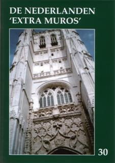

> publicaties >
jaarboek
30 (2008)
Het is niet zonder enige voldoening dat we
onze leden dit extra-omvangrijke
jaarboek aanbieden. Het is meteen het 30e in een stilaan statige rij.
De
extraomvang is te danken aan het afsluitende gedeelte, waarin we het
register
opnamen over de jaarboeken 21 tot en met 30. Aan de hand van dit
“naslagwerk”
vindt de lezer(es) moeiteloos de thema’s terug die hem of haar
specifiek ter
harte gaan binnen het geheel van onze Nederlanden “extra muros”. De
meer dan 550
trefwoorden, alleen al over de jaarboeken 21-30 illustreren beter dan
veel
woorden de inhoudelijke rijkdom aan gebundelde gegevens.
Het register openbaart ons nog
méér. Zo
bijvoorbeeld dat we in de loop
van die dertig jaargangen niet minder dan 322 uitgebreide essays
publiceerden
over zowat alle terreinen van het ZANNEKIN-werkgebied. Daarnaast kwamen
180
boekrecensies aan bod over publicaties die op een of andere wijze aan
dat
werkgebied aandacht besteed hebben. Voorwaar in zijn geheel een schat
aan informatie
en kennis die we voor u door de jaren heen konden bundelen ten bate van
al wie
nog enge interesse betoont voor onze Nederlandse geschiedenis doorheen
de
voorbije eeuwen.
Misschien is het nooit voorheen
uitdrukkelijk vermeld, en dan wordt het
hoogtijd dit eens uitgesproken te doen: alle jaarboekbijdragen worden
ons door
de auteurs volledig “pro Deo” de auteurs ter beschikking gesteld. Na
dertig
jaar is een woord van dank aan onze vele voor ons jaarboek schrijvende
medewerkers dan ook ten volle op zijn plaats!
Ook dit 30e jaarboek biedt weer een zeer
verscheiden palet aan – dit keer
– eerder korte bijdragen; van een paar bijdragen leest u volgend jaar
overigens
het afsluitende tweede deel. De “terreinen” en de “tijdperken” die in
deze
aflevering aan bod komen zijn zo verscheiden als de Nederlanden zelf
dat zijn.
We wandelen als het ware van de 11e naar de 21e eeuw door alle gebieden
van de
Nederlanden “extra muros”, en staan nu eens hier, dan weer daar even
stil bij
de vele beklijvende gegevens die ertoe bijgedragen hebben onze
Nederlandse
geschiedenis en cultuur gestalte te geven. “Wij staan – inderdaad – op
de
schouders van hen die ons voorafgingen”, zoals Marten Heida het in een
kroniekbijdrage omschrijft.
Als naar gewoonte sluiten we af met de
kroniekbijdragen die in bondig
bestek een breed overzicht bieden onder de vorm van kortere stukken en
tal van
boekrecensies met betrekking tot publicaties die een of ander aspect
van de
Nederlanden ‘extra muros’ voor het voetlicht brengen.
Inhoudsopgave
- Het nieuwe jaarboek opent met een bijdrage
van Ruud
Bruijns over Het
Huis van Henegouwen en de toekenning van stadsrechten in Holland en
Zeeland. Daarin wordt inzicht geboden in de vroege betrekkingen
tussen Noord- en Zuid-Nederland.
- Volgt een bijdrage van Huib D.
Minderhout over de in Vlaanderen vrijwel onbekende Slag
bij Ane en zijn gevolgen in vergelijking met de Guldensporenslag.
- Willy Alenus behandelt de vraag Welke taal
spraken de eerste admiraals van Nederland? Waarbij de figuur van
Willem van der Marck, alias Lumey, centraal komt te staan.
- In het Nieuwe Land, van de hand van Dick Wortel,
brengt de schriftelijke neerslag van een referaat op de Zannekin
Ontmoetingsdag. De auteur gaat op zoek naar vergelijkingspunten tussen
de emigratie van de 16e eeuw en de hedendaagse en staat stil bij de
wijze waarop integratie toen bekeken werd.
- Al meermaals behandelde Cyriel Moeyaert het thema van Het Nederlands in
Sint-Omaars door de eeuwen heen. In dit derde luik brengt hij
andermaal tal van nieuwe gegevens aan.
- Van de hand van de betreurde Antoon
Lowyck brengen we de voorlaatste aflevering van zijn reeks over de
Nederlandstalige borden in de Westhoek van de
Nederlanden in Frankrijk. Deze verdienstelijke actie van de
werkgroep EUVO viel ondertussen niet stil – sindsdien werden nog tal
van borden geplaatst – maar de wijze waarop Lowyck deze acties wist te
documenteren kwam te vervallen.
- Zeno Kolks leverde andermaal een kunsthistorische
bijdrage van hoog gehalte met zijn Buitenregionale
invloeden in en aan kerken… in Oost-Nederland en het aangrenzende
Duitse gebied Bentheim en Westmunsterland. Van deze rijk
geïllustreerde studie leest u in dit jaarboek het eerste deel.
- Volgen twee bijdragen van de hand van Marten Heida, respectievelijk over Emden,
een vluchthaven voor vervolgden om hun geloof – de schriftelijke
neerslag van zijn referaat op de Zannekin Ontmoetingsdag te Emden in
2007 – en Het ‘testament’ van Anna Metta Luths, waarin
verslag wordt gedaan over de wijze waarop de Wangeroogse variant van
het Fries voor het nageslacht behouden bleef.
- Het Oera Linda-boek:
een blijvend mysterie? Pieter Jan Verstraete zet in deze mysterieuze affaire alle
gegevens op een rij, zodat het vraagteken in zijn titel wel vervallen
kan.
- Leo Camerlynck ging op zoek naar relicten van het
Nederlands verleden ver van huis. In New York, een
Belgisch verhaal? – deel 1 – leest u een overvloedig
geïllustreerde eerste oogst aan bevindingen. Als bij de klassieken
is
“Belgisch” ook hier vanzelfsprekend een synoniem voor Nederlands.
- Aan de afsluitende rubriek Kroniek
en boekbesprekingen gaat uiteraard het jaarlijks overzicht van wat
reilt en zeilt “over de Schreve”, de Kroniek de Franse
Nederlanden van Johan van Herreweghe vooraf.
- Extra – wat de omvang van dit jaarboek op
liefst 254 pagina’s brengt – is dit jaar het Register over
de jaarboeken De Nederlanden ‘extra muros 21-30’. Via dit
uitgebreide vindt de lezer moeiteloos de weg binnen de voorbije tien
jaargangen van onze jaarboekenreeks.
Dit zoals bij de vorige uitgaven opnieuw
rijkelijk geïllustreerde jaarboek werpt aldus andermaal een blik
op wat
ons
bindt binnen de Nederlanden, en ook en vooral binnen en met die
“randgebieden”,
en dat is andermaal veel meer dan men zou vermoeden.
________________________
N.a.v. het 30e ZANNEKIN-jaarboek De
Nederlanden “extra
muros”, Ieper, 2008, 254 pp. ISBN 978-90-71326-25-7. Ledenprijs: 25
€;
niet-leden: 30 € + 3 € verzendkosten.
|
omvang
|
208 pagina's. Inhoud: zie Nieuwsbrief 2/2008
|
|
ISBN
|
9789071326264. Recensie: zie Nieuwsbrief 3/2008 (juli
2008).
|
|
prijs leden (inclusief verzendingskosten)
|
€ 25,00 |
|
prijs niet-leden (exclusief 3 €
verzendingskosten)
|
€ 30,00 |